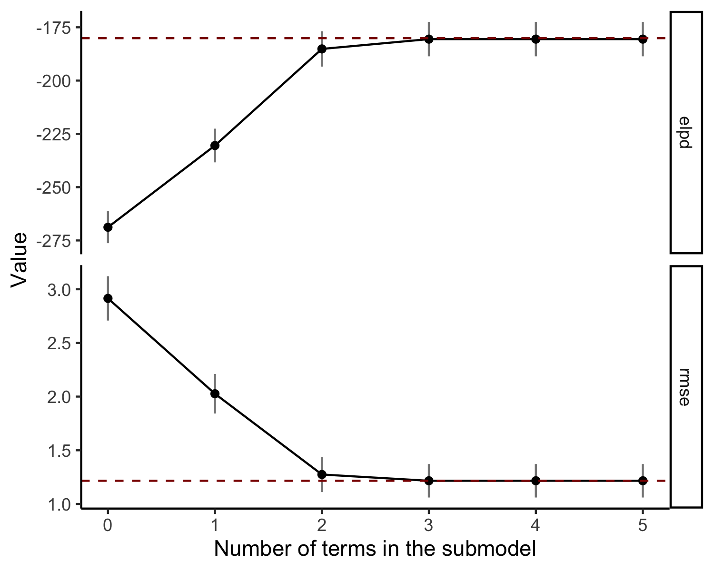
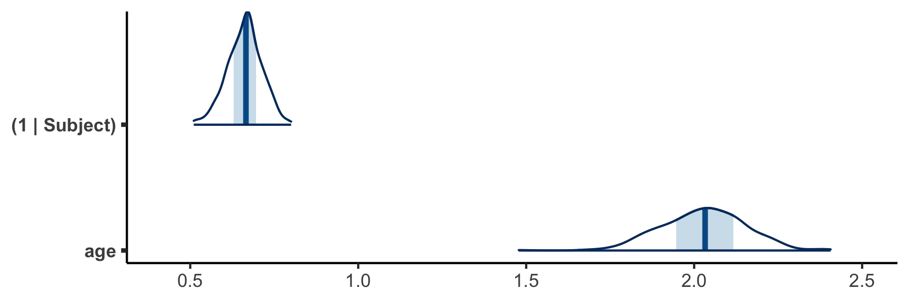
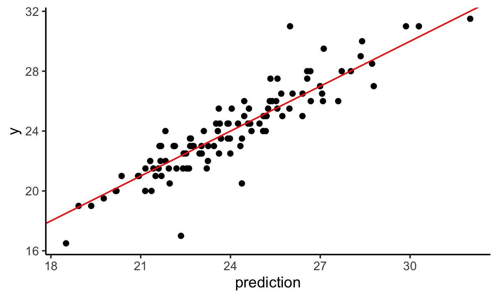
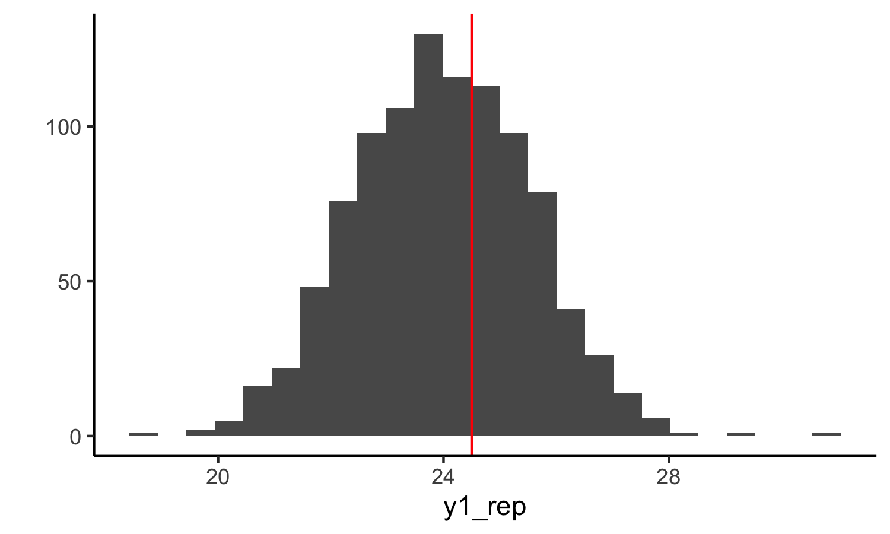
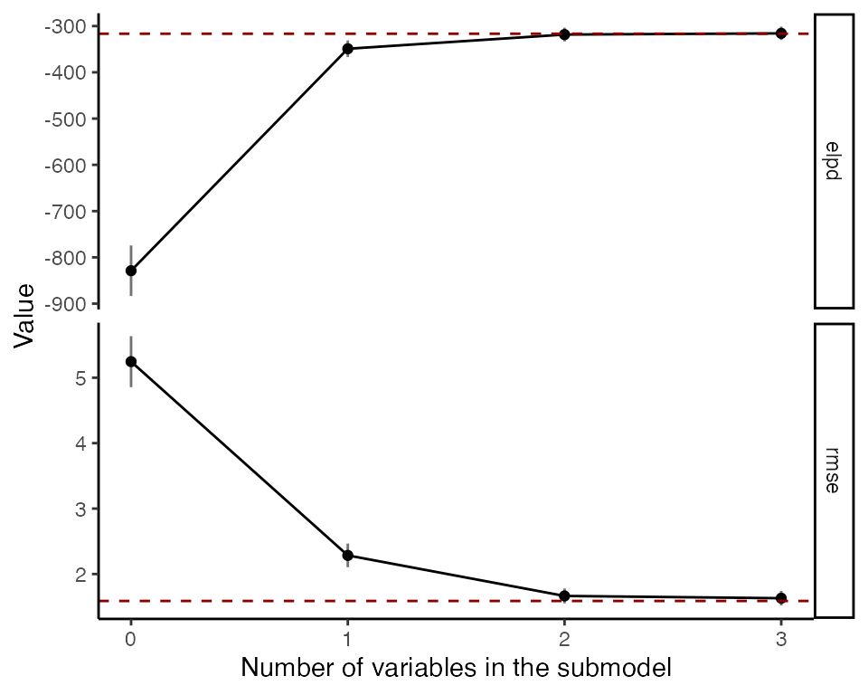
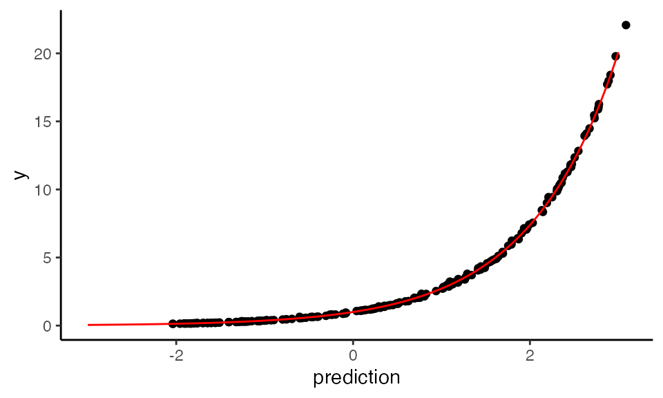
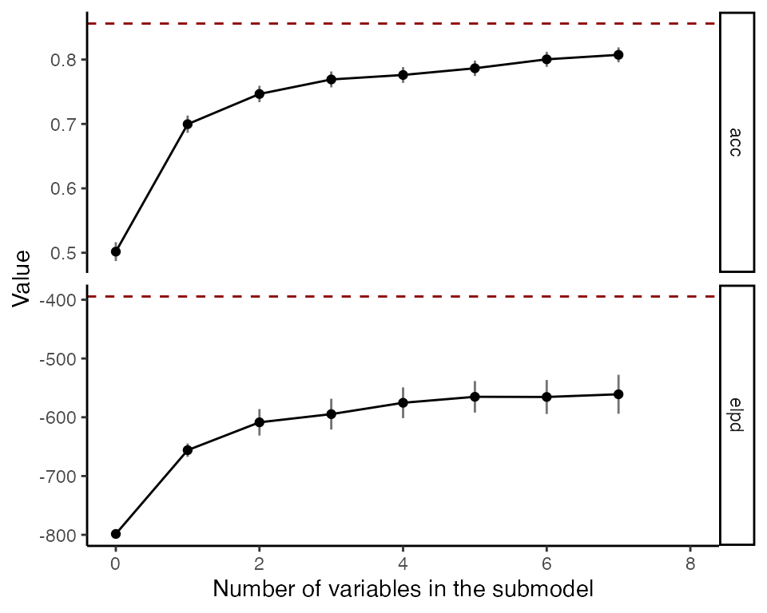

projpred Performing variable and structure selection on Generalized Linear Multilevel Models
2020-10-16
Source:vignettes/quickstart_glmm.Rmd
quickstart_glmm.RmdThis vignette requires the projpred version currently available in master branch at https://github.com/stan-dev/projpred
This vignette shows how to use projpred to perform variable selection in the context of Generalized Linear Multilevel Models (GLMMs). For a general overview of the package we refer the reader to the quickstart vignette. The method used here is described in the latest preprint (Catalina et al. 2020).
Gaussian example
Load the necessary packages. If the sampling takes more than 30 seconds and multiple cores are available, uncomment the line setting mc.cores to set the number of cores used (this is commented out as the sampling in the example is fast and to avoid possible problems when building the vignette along the package installation in special environments such as computing clusters).
library(projpred) library(rstanarm) library(tidyr) library(dplyr) library(ggplot2) library(bayesplot) theme_set(theme_classic()) #options(mc.cores = 4)
For the first Gaussian example we borrow the popular orthodont dataset from the nlme package. This data include observations from a growth curve on an orthodontic measurement. It contains 108 observations with 4 variables. The variables contained in this dataset are:
- distance, numeric distances from the pituitary to the pterygomaxillary fissure (mm). These are measured on x-ray images of the skull.
- age, the age of the subject (years).
- Subject, an ordered factor indicating the subject on which the measurement is taken.
- Sex, indicator of sex in the subject.
data("Orthodont", package = "nlme")
We first build the following complete rstanarm model including all variables:
fit <- stan_glmer(distance ~ age * Sex + (age | Subject), chains = 2, data = Orthodont, seed = 1)
Since we have repeated measurements over subjects at multiple time points, the effect of age is allowed to vary over subjects. To run projpred on this model we can first run a simple variable selection with the full dataset. This approach may be overconfident in some cases and therefore in general cases it is recommended to run a cross validated variable selection.
vs <- varsel(fit)
Because our model includes group effects, the only available search method is forward search, which is a bit slower than L_1 search but is quite accurate. Beware that the underlying projection fitting method could return some warnings in cases where the optimization may not have converged properly. This is more common in the case of generalized models (non-Gaussian families). We print the list of the variables ordered by relevance:
solution_terms(vs) # selection order of the variables
## [1] "(1 | Subject)" "age" "(age | Subject)" "Sex"
## [5] "age:Sex"We plot some statistics computed on the training data, such as the sum of log predictive densities (ELPD) and root mean squared error (RMSE) as the function of number of variables added. By default, the statistics are shown on absolute scale, but with deltas = TRUE the plot shows results relative to the full model.

From this plot, it is clearly visible that the first two terms are probaly enough to achieve predictive performance comparable to the reference model. We perform the projection for a submodel of desired size using the function project. The projection can also be coerced to a matrix with draws of the selected variables and sigma. The draws can be visualized with, for example, the mcmc_areas function in the bayesplot package. Below we compare how the projection affects the three most relevant variables.
# Visualise the projected three most relevant variables proj <- project(vs, nterms = 2, ns = 500) mcmc_areas(as.matrix(proj), pars = solution_terms(vs)[1:2])

We make predictions with the projected submodels. For point estimates we can use method proj_linpred. Test inputs can be provided using the keyword newdata. If also the test targets ynew are provided, then the function evaluates the log predictive density at these points. For instance, the following computes the mean of the predictive distribution and evaluates the log density at the training points using the 5 most relevant variables.
pred <- proj_linpred(vs, newdata = Orthodont, nterms = 5, integrated = TRUE)
Visualize the predictions
ggplot() + geom_point(aes(x = pred$pred, y = Orthodont$distance)) + geom_abline(slope = 1, color = "red") + labs(x = "prediction", y = "y")

We also obtain draws from the projected predictive distribution. Here’s an example prediction for a random data point using 5 terms (the observed value is marked by the red line).
subset <- Orthodont %>% as_tibble() %>% dplyr::sample_n(1) y_subset <- subset %>% as_tibble() %>% dplyr::select(distance) y1_rep <- proj_predict(vs, newdata = subset, nterms = 5, seed = 7560) qplot(as.vector(y1_rep), bins = 25) + geom_vline(xintercept = as.numeric(y_subset), color = "red") + xlab("y1_rep")

Poisson example
In this case we will download count data from the web,
data_pois <- read.table("data_pois.csv", header = TRUE)
These data correspond to a phylogenetic dataset where the phenotype is expressed as counts. This kind of data is relevant in evolutionary biology when data of many species are analyzed at the same time. The model we fit here is borrowed from Modern Phylogenetic Comparative Methods and the application in Evolutionary Biology (de Villemeruil & Nakagawa, 2014). The necessary data can also be downloaded from the corresponding website (http://www.mpcm-evolution.com/). The model is taken from the Estimating Phylogenetic Multilevel Models with brms vignette of the brms package (https://cran.r-project.org/web/packages/brms/vignettes/brms_phylogenetics.html).
fit <- stan_glmer( phen_pois ~ cofactor + (1 | phylo) + (1 | obs), data = data_pois, family = poisson("log"), chains = 2, iter = 2000, control = list(adapt_delta = 0.95) )
As we did in the previous example, we can perform variable selection and look at the projection.
vs <- varsel(fit)
Because our model includes group effects, the only available search method is forward search, which is a bit slower than L_1 search but is quite accurate. Beware that the underlying projection fitting method could return some warnings in cases where the optimization may not have converged properly. This is more common in the case of generalized models (non-Gaussian families). We print the list of the variables ordered by relevance:
solution_terms(vs) # selection order of the variables
## [1] "cofactor" "(1 | phylo)" "(1 | obs)"We plot some statistics computed on the training data, such as the sum of log predictive densities (ELPD) and root mean squared error (RMSE) as the function of number of variables added. By default, the statistics are shown on absolute scale, but with deltas = TRUE the plot shows results relative to the full model.

We perform the projection for a submodel of desired size using the function project. The projection can also be coerced to a matrix with draws of the selected variables and sigma. The draws can be visualized with, for example, the mcmc_areas function in the bayesplot package. Below we compare how the projection affects the most relevant variables.
# Visualise the projected two most relevant variables proj <- project(vs, nterms = 2, ndraws = 10) mcmc_areas(as.matrix(proj), pars = solution_terms(vs)[1:2])

As we did in the Gaussian example, we make predictions with the projected submodels. The following computes the mean of the predictive distribution and evaluates the log density at the training points using the previously projected model.
pred <- proj_linpred(proj, newdata = data_pois, integrated = TRUE)
We can also visualize the corresponding projected predictions.
xaxis <- seq(-3, 3, length.out = 1000) y_mu <- rowMeans(vs$refmodel$mu) ggplot() + geom_point(aes(x = pred$pred, y = y_mu)) + geom_line(aes(x=xaxis, y = exp(xaxis)), color = "red") + labs(x = "prediction", y = "y")

Bernoulli example
For both of the previous cases, running variable selection with the full data was actually enough because they were pretty simple. In this section we work on a slightly more complex data set.
We can load the data from the popular lme4 package:
data("VerbAgg", package = "lme4")
The whole dataset consists of 7584 questionnaire answers from different subjects. Given that the full data could take a long time to fit, we will subsample 50 individuals (for which sampling still takes a bit). For this, we use the great tidyverse environment.
## subsample 50 participants VerbAgg_subsample <- VerbAgg %>% tidyr::as_tibble() %>% dplyr::filter(id %in% sample(id, 50)) %>% dplyr::mutate(r2num = as.integer(r2) - 1) # binomial family needs numeric target
For this simple model we will add some group effects that we know are not quite relevant.
## simple bernoulli model formula_va <- r2num ~ btype + situ + mode + (btype + situ + mode | id) fit_va <- stan_glmer( formula = formula_va, data = VerbAgg_subsample, family = binomial("logit"), seed = 1234, chains = 2 )
As we did before, we can run the standard variable selection with
vs_va <- varsel(fit_va)
solution_terms(vs_va)
## [1] "(1 | id)" "btype" "situ" "(situ | id)" "(btype | id)"
## [6] "mode" "(mode | id)"
Even though the ordering of the variables makes sense, the performance of the projected models does not quite match the reference model. There may be different reasons that can explain this behaviour:
- The reference model posterior may not be very narrow and then running
varselwith the defaultndraws_predcould be not enough. Increasingndraws_predhelps but also increases the computational cost. Re fitting the reference model ensuring a narrower posterior (usually employing a stronger sparsifying prior) would have a similar effect. This is usually the case when the difference in predictive performance is not very large. - For non-Gaussian models the source of the inaccuracy may come from the fact that we are running an approximate projection. In this case, increasing the number of draws for the prediction
ndraws_predshould also help. - Given that
varselcomputes the expected predictive performance of the reference model from the in-sample mean, it may sometimes result in overconfident results. Runningcv_varselwith LOO cross validation computes the predictive performance by taking PSIS-LOO weights into account, usually reporting a more realistic ELPD.
By default, cv_varsel will run LOO cross validation, and will try to run a full variable selection for every data point. We will not run it in this vignette for computational reasons, but it is always recommended to run the full CV procedure. Nonetheless, running varsel first can offer a first idea of the performance of the projections. Cross-validated selection procedure can be run with cv_varsel(object, cv_method = "loo", nloo = ..., K = ...) with a similar API as varsel.